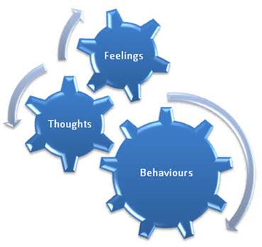
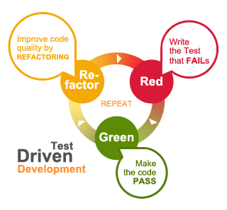
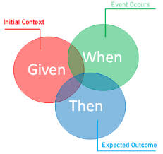

Data-Driven Testing & Behavior-Driven Development

TABLE OF CONTENTS
- Test Driven Development
- Data Driven Testing Vs Dynamic data generators
- Behavior-Driven Development
- Cucumber JVM
- Gherkin language
Test Driven Development
Test Driven Development
- Style of programming in which three activities are tightly interwoven: coding, testing (in the form of writing unit tests) and design (in the form of refactoring)
- Advanced technique of using automated unit tests to drive the design of software and force decoupling of dependencies. Heavily emphasized by those using Agile development methodologies
TDD (2)
-
It can be described by the following set of rules:
- write a "single" unit test describing an aspect of the program
- run the test, which should fail because the program lacks that feature
- write "just enough" code, the simplest possible, to make the test pass
- "refactor" the code until it conforms to the simplicity criteria
- repeat, "accumulating" unit tests over time
TDD (3)
- Is a Test-First approach (Write the test-code first and then write the dev-code)
- It leads to think about ‘How to use a component’ first and then about ‘How to implement’
- As much about design technique as testing technique
- As much about (executable) documentation as testing
- Never write a single line of code unless you have a failing automated test
TDD (4)
- Just enough design and development
- No option of BDUF (Big design up-front)
- Incremental design
- Design for now not for next
- Refactoring for improving design
TDD (5)
- No dead code
- Simple design
- Have full-coverage test code so maintenance and refactoring are easy (not nightmare)
- Executable documentation
- No (or minimum) debugging
Test code... is ... Production code!
Test YOUR own code rigorously.
Data Driven Testing
Data Driven Testing
- A scripting technique that stores test input and expected results in a table or spreadsheet, so that a single control script can execute all of the tests in the table
- In the simplest form the tester supplies the inputs from a row in the table and expects the outputs which occur in the same row. The table typically contains values which correspond to boundary or partition input spaces
- Data-driven testing allows executing the same test (or tests) multiple times with different set of data
- Test input and output verification data values are separated from the test code
Data Driven Testing (2)
- DDT is done using a table of conditions directly as test inputs and verifiable outputs as well as the process where test environment settings and control are not hard-coded
- Simplest form the tester supplies the inputs from a row in the table and expects the outputs which occur in the same row. In the control methodology, test configuration is "read" from a database/config files
Data Driven Testing (3)
-
Common Steps are:
- Create a test script with a set of constant test data
- Replace constant test data with some variables
- Create multiple sets of test data in a data storage (e.g. Excel, CSV, XML, ...)
- Assign to variables the values read from the data storage
Data Driven Testing (4)
There are several methodologies available for implementing it. Each of these methods co-exist because they differ in the effort required to create and subsequently maintain. The advantage of Data-driven testing is the ease to add additional inputs to the table when new partitions are discovered or added to the product or System Under Test. The cost aspect makes DDT cheap for automation but expensive for manual testing.
Data Driven Testing (5)
- Anything that has a potential to change (also called "variability," and includes elements such as environment, end points, test data, locations, etc.) is separated out from the test logic (scripts) and moved into an 'external asset'.
- This can be a configuration or test dataset. The logic executed in the script is dictated by the data values.
- Most popular data sources are:
Dynamic data generators
- Test Data Generator is any tool/functionality which creates random and/or large quantities data for testing purposes. (Sometimes you don't want pure randomness.)
- Closely simulate a production environment
- e.g. mockaroo
Dynamic data generators (2)
- Pesticide Paradox - The phenomenon that the more you test software, the more immune it becomes to your tests - just as insects eventually build up resistance and the pesticide no longer works
- SUT suffers from static test data
Behavior-Driven Development
BDD
- Process that emerged from test-driven development (TDD). BDD combines the general techniques and principles of TDD with ideas from DDD and object-oriented analysis
- Designed to provide software development and management teams with shared tools and a shared process to collaborate on software development platform
- BDD is an Agile Process that encourages collaboration between developers, QA and non-technical or business participants in a software projec
- At the heart of BDD is a rethinking of the approach to the unit testing and acceptance testing
BDD (2)
- Focuses on behavioral specification of software units
-
Expected Benefits for Teams already using TDD or ATDD:
- offers more precise guidance on organizing the conversation between developers, testers and domain experts
- notations originating in the BDD approach, in particular the given-when-then canvas, are closer to everyday language and have a shallower learning curve
- tools targeting a BDD approach generally afford the automatic generation of technical and end user documentation from BDD "specifications"
BDD (3)
-
BDD Features
- A testable story (it should be the smallest unit that fits in an iteration)
- The title should describe an activity
- The narrative should include a role, a feature, and a benefit
- The scenario title should say what's different
- The scenario should be described in terms of Givens, Events, and Outcomes
- The givens should define all of, and no more than, the required context
- The event should describe the feature
Cucumber JVM
Cucumber
- Framework for writing and executing high level descriptions of your software's functionality. Call these tests…
- One of Cucumber's most compelling features is that it provides the ability to write these descriptions using plain text in your native language. Call this English…
- It is NOT a low level testing/specification framework !
- Plays a central role in the BDD approach
Cucumber (2)
- It runs automated acceptance tests on web applications. ● Cucumber is a tool that executes plain-text functional descriptions as automated tests.
- The language that Cucumber understands is called Gherkin
Gherkin language
Gherkin
- Cucumber’s DomainSpecificLanguage
- Features - something that your software does (or should do), and generally corresponds to a user story
- Scenarios - feature is defined by one or more scenarios. A scenario is a sequence of steps through the feature that exercises one path. A scenario is made up of 3 sections related to the 3 types of steps.
Test suite
Feature: [short description]
[story]
[scenario 1]
...
[scenario n]
Gherkin (2)
-
Steps:
- Given: This sets up preconditions, or context, for the scenario. It works much like the setup in xUnit
- When: This is what the feature is talking about, the action, the behaviour that we're focused on
- Then: This checks postconditions, it verifies that the right thing happen in the When stage
Gherkin (3)
- Looking at the general form of a scenario...
- Note the And line. And can be used in any of the three sections. It serves as a nice shorthand for repeating the Given, When, or Then. And stands in for whatever the most recent explicitly named step was: Given, When, or Then
Test case
Scenario: Display a number below 12 in written form
Given I am on the main page
When I enter 10 into my field
And I press submit
Then I see "ten" as a result
Gherkin (4)
- While there are no constraints on the number or order of steps, it is generally best to keep scenarios as simple as possible and have multiple simple scenarios. The closer your scenarios conform to the given-when-then format, the better
- That doesn't read nearly as well, though. Similarly, if you want to state a negative Then step, you can use But in place of Then, for example:
Test case - negative
Then the game should say “Welcome to CodeBreaker”
But the game should not say “Save the cheerleader, save the world”
Gherkin (5)
- Note that passed arguments are always strings. If you need them converted to other types, it's up to you to do that conversion in the block (step implementation).
- Background allows you to add some context to the scenarios in a single feature. A Background is much like a scenario containing a number of steps. The difference is when it is run. The background is run before each of your scenarios
Test case - Background
Background: As part of each Scenario I want to set my defaults.
Given my telephone number is "(100) 000-0001"
And I am testing the "CCard" workflow.
 evgenikostadinov@gmail.com
evgenikostadinov@gmail.com